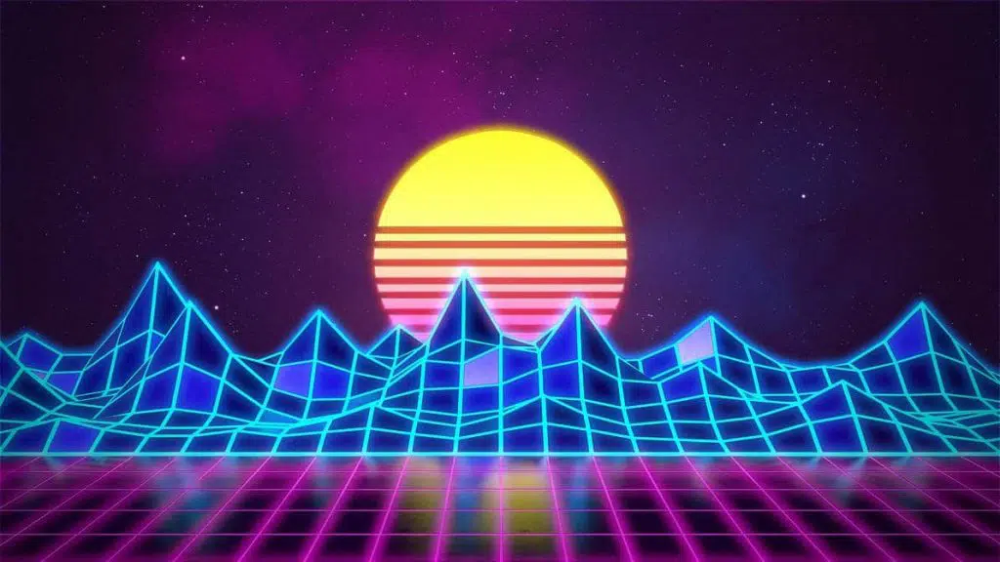

The World in Waves
A way to see the modern world in a new age aesthetic.
By: Benjamin Andrusko
What is Synthwave?
The aesthetic of synthwave was first developed in the music scene as a form of nostalgia, paying homage to the 1980's and 1990's. These designs usually contain grid-like lines, sunsets and city skylines to emulate a dystopian-type world.
An image showing synthwave.
The aesthetic mainly comes from video games and movies that were made between the 1980's and 1990's. Synthwave was a form of nostalgic representation of these classic sci-fi games and movies, such as the original Tron movie for example.
A movie poster from Tron, a movie from the early 1980's.
Form
The form of synthwave includes city skylines when it is represented in art, so I tried to emulate that through the use of 3D in my map. The 3D used in my map would try emulate the city skylines over the setting sun, in which 3D was useful for that mapping aspect.
An image of a city in the synthwave aesthetic.
I had also implemented form through the use of mountains. With MapBox's helpful 3D representation tools, I had tried to incorporate mountains into the final design of the map. I had also used blurring and emissions to make the 2D portions, such as walking paths and roads, to make it stand out amongst the towering 3D parts.
An image showing how mountains are associated with synthwave.
Type
I focused on type when it came to the fonts on the map. I had mainly used fonts that reflects a futuristic desgin that was used in the 80's and 90's. I mainly found these fonts through video game covers of the time. I had used a series of Orbitron fonts for a variety of features such as neighborhoods, rivers, and small cities.
This image shows the game Spy Hunter from the early 1980's.
I had also used the Road Rage font to represent bigger cities across the globe. This font resonates with an early 80's style of font also used in media, creating that nostalgic feel when it comes to bigger titles.
An example of all the fonts used for the Twin Cities metro area in Minnesota.
Colors
The inspiration behind modern synthwave is to use sunset-like colors on a dark, night-like plane. I tried to emulate this design by incorporating both the sunset and night sky aspect within modern synthwave artwork. Within cities I try to use different colors for different features, such as roads, sidewalks and rail lines. This tried to emulate the grid-like design typically incorportated into synthwave artwork.
A picture showing inspriation for some of the sunset colors used in this map.
I had also focused on adjusting the atmosphere heavily into this map, making it a focal point to emulate the sunset-like colors assocaited with the synthwave aesthetic. This pairs well with the 3D form of the map to try and emulate a synthwave artpiece.
An image of the atmosphere within the map to reflect the synthwave aesthetic. This snippet was taken in Hong Kong, China.
Texture
There are two textures used within the map. The first texture is placed on the three-dimensional buildings. This texture came from the sun from the synthwave artwork at the start. I had deliberated a lot on different textures, from grids to building lights. I figured the best texture that blended well with a setting sun atmosphere was the sun itself, as it looks as if the buildings are reflecting the colors off of its glass. I had dimmed the overall color of the map with an overarching dark blue hue, which made the texture of the bright setting sun on the buildings distinguish itself from the other colors, on top of blending with the rest of the colors.
A snippet used as the texture for the buildings, taken from the background image at the start.
I had also used a triangle and neon texture on national parks. When looking for an effective way to implement this texture, I based it off the criteria of mixing with the base purple color while also trying to implement the pattern subtly within the mountains since mountains are angular. In some areas I noticed that national parks tended to have elevated places. When mixing it with mountainous cities, such as Vancouver or Rio de Janeiro, it really brings aesthetic come to life.
Another snippet showing the texture used for the national parks, which was also taken by the background image at the start.
Inspirational Cities
Vancouver, Canada
When looking for different cities that best exemplify the aesthetic, I looked for different criteria for each city. Although not all cities fit all these elements, I chose cities based off their modern skyline, proximity to mountains, proximity to the sea, and cities with historically good transit. There were plenty of cities that fit this criteria, yet I wanted to span this exhibit over places all across the globe. Let's start with Vancouver, Canada.
In a global sense, a lot of people do not think of Vancouver as a modern bustling city.
From my personal experience, I was in awe of everything I saw. Downtown Vancouver was full of highrises and modern buildings, all surrounded by mountains near the ocean.
I was also impressed by their strong transit infrastructure. Their transit was surprisingly a big part in my idea of using tron-like lines in my map's design.
Walking around downtown Vancouver was amazing. The grid pattern made it easy to walk places, there were highrises all around, and all around was a glimpse of the ocean.
Vancouver was an eye-opening city for me to visit. It made me rethink what modern city design is like, making Vancouver a perfect representation of modern vaporwave in my eyes.
Dubai, UAE
Dubai is world-renouned as being one of the most modern cities.
Dubai was one of the first cities that I had thought of when it came to a modern day 'dystopia'.
This mainly stems from their megaprojects. It's amazing to see these megaprojects projected on a map.
These megaprojects bring about some of the most modernarchitecture, which is a big element behind synthwave.
The Burj Khalifa, one of the most famous of these mega pojects, brings about humanity's needs to become a dystopia, making the modern city skyline a perfect representation of synthwave.
Milan, Italy
Europe has long been known for being one of the most connected and developed continents in the world.
There were plenty of cities to choose from in Europe. With its vast train network, city-grid design and plenty of walking paths, European cities are known to be some of the best for modern transportaion.
The difficulty when it came to finding a city that best fits the synthwave aesthetic was the lack of highrise buildings within a city's central business district. Since European cities are so old, they tend to preserve a lot of historical sites.
So why choose Milan to represent synthwave? A few reasons. While looking from a geographic perspective, Milan was close to a mountain range that provided the ideal aesthetic.
Milan also had a lot of walking paths, a great infrastructure network and lots of greenspace. All of these aspects together create a diverse mix which brings out the best in the synthwave aesthetic.
Finally, Milan has one of the most modern skylines in Europe. With the city having one of the tallest buildings all across the continent, it adds to the dystopian nature that synthwave brings.
Rio de Janeiro, Brazil
Rio de Janeiro is a city world renouned for its astounding culture around the world. From the city having one of the new seven wonders of the world to Carnival, this city is known globally as an icon.
Rio also fits the natural elements that best emphasizes the aesthetic of synthwave. From its mountainous exterior to having pristine ocean access, it creates a perfect scene for the entire aesthetic.
Within its downtown, Rio also has a great foundation of rail and road networks, creating a lightshow display on the map that emulates the tron-type aesthetic that synthwave is known for.
Furthermore, with Carnival being one of the biggest global events, Rio has a very connected walking grid. This further adds to the tron-like aspect that pops out with this map's design.
Finally, Rio has a beautiful downtown skyline. With the ocean up front and the mountains in the back, Rio from all angles encapsulates the synthwave aesthetic in every way.
That concludes my exhibition of my synthwave map! To explore more of this aesthetic yourself, check out the full map below:
Credits:
Map made in MapBox
Data from openstreetmap
Tron Image: : https://www.themoviedb.org/movie/97-tron/images/posters
City Synthwave Image: https://siachenstudios.com/wp-content/uploads/2021/05/synthwave-artist.jpg.webp/
Mountain Sunrise Image: https://www.etsy.com/market/vaporwave_painting?utm_source=bing&utm_medium=cpc&utm_campaign=Search_US_DSA_BNG_ENG_Art-Collectibles_Categories_All&utm_ag=Painting&utm_custom1=_k_f1646f10f84b17e860880828993259b2_k_&utm_content=bing_555088778_1307320477148811_81707585649450_dat-2333507271832022:loc-190_c_&utm_custom2=555088778&msclkid=f1646f10f84b17e860880828993259b2
Background Intro Image: https://images.fineartamerica.com/images/artworkimages/mediumlarge/3/synthwave-vaporwave-aesthetics-edmproject.jpg
Spy Hunter Cover: https://www.mobygames.com/game/7668/spy-hunter/cover/group-303411/cover-750740/
Mountain Synthwave Image: https://www.deepinthemix.com/wp-content/uploads/2021/01/synthwave___neon_80s___background___render_revamp_by_rafael_de_jongh_dblbdx1-pre-1024x576.jpg
Synthwave Image With Car: https://wallpapercave.com/wp/wp8233560.jpg